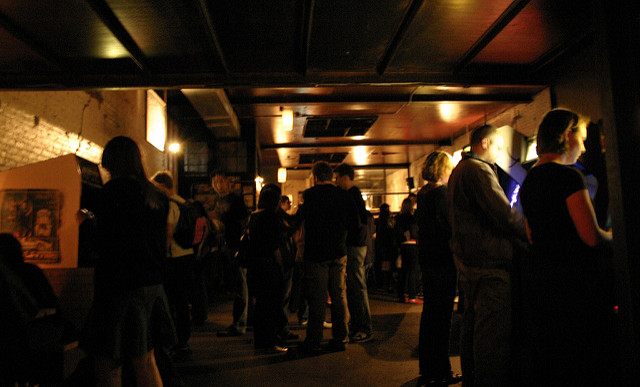

In 2004, two friends, John and Joshua, were playing video games together on their back porch in Atlanta, GA. After several hours of play, they sat back and reached into their refrigerator for a brew and a sandwich, only to come up short. They didn’t want to stop gaming in order to get some grub, but they didn’t have a choice.
“Wouldn’t it be great to get some food and continue to play at the same place?” asked John. Joshua agreed. And the concept for “Ye Olde” was born. It wasn’t until the year 2005 that they were able to see their plans materialize.
“Ye Olde” opened their doors on March 1, 2005 to positive reviews. With a warm and welcoming atmosphere, classic British pub-style grub, and a selection of delicious and unique beer choices, “Ye Olde” is popular with young and old alike. It rocketed into the spotlight when it hosted events for the popular gaming convention MomoCon in 2006.
In 2011, John and Joshua opened a second pub, called “Ye New” at the Atlanta Perimeter.